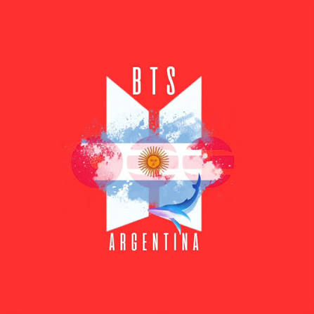
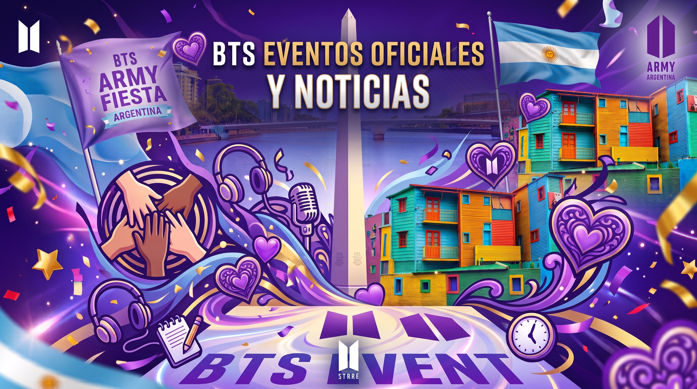
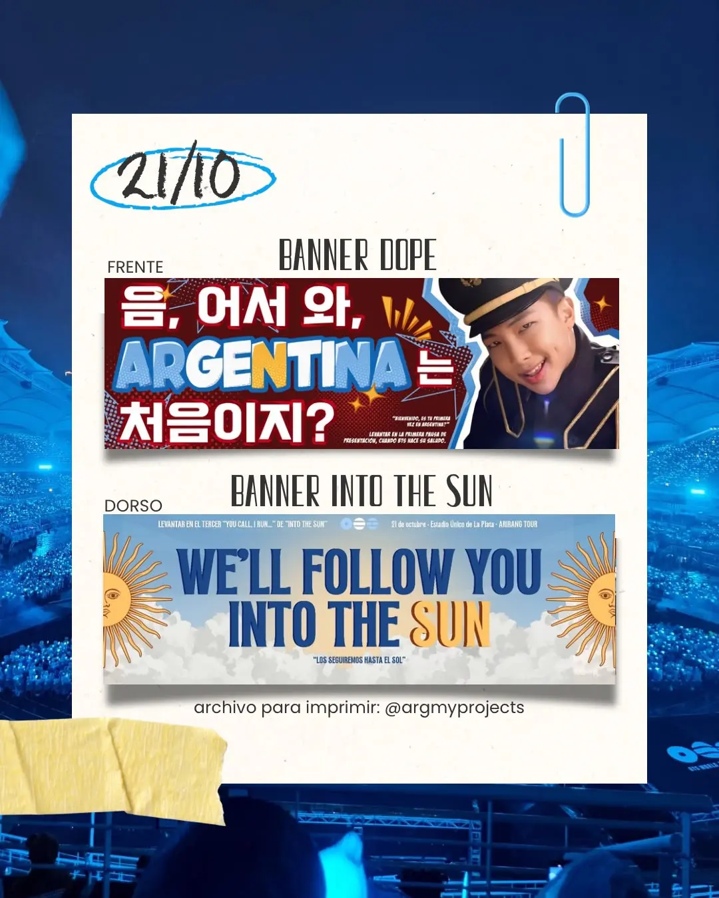
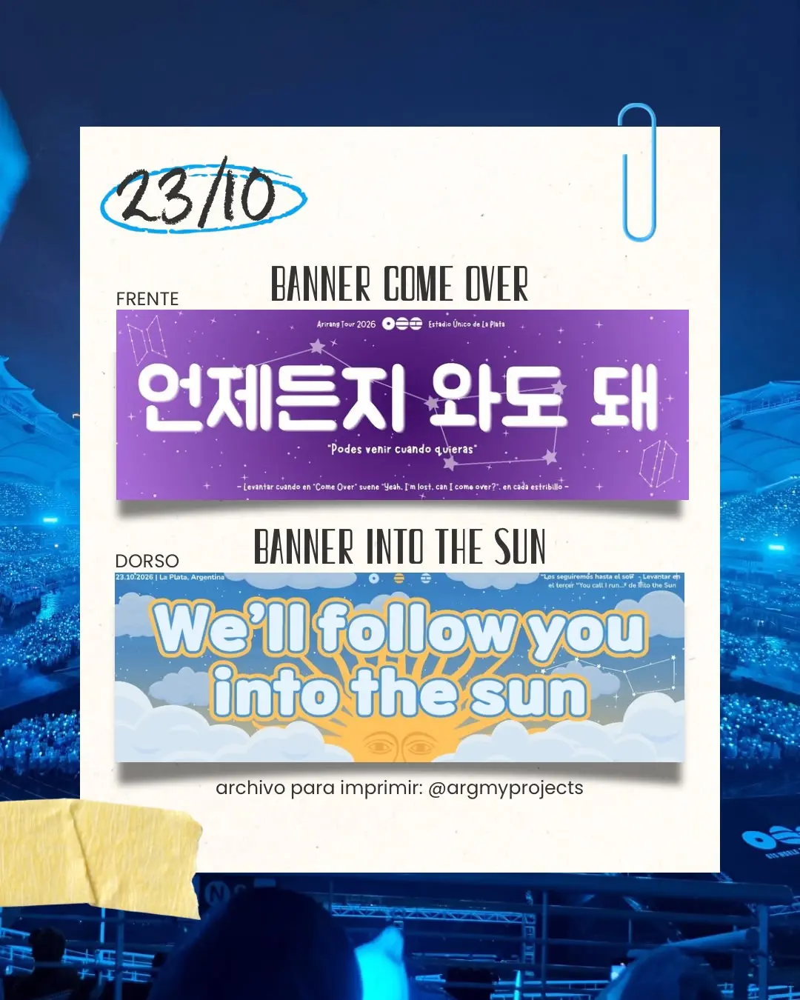
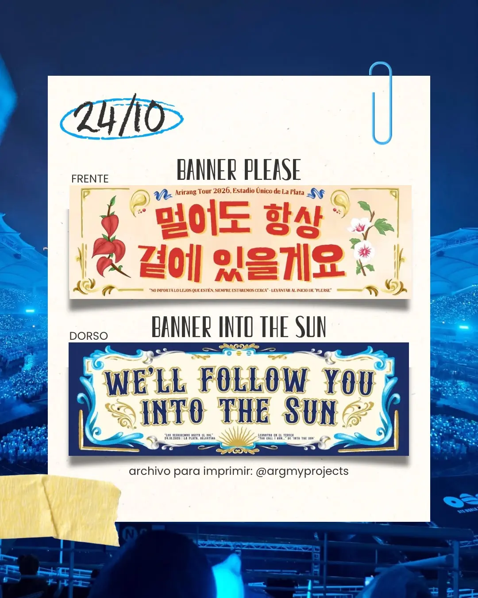
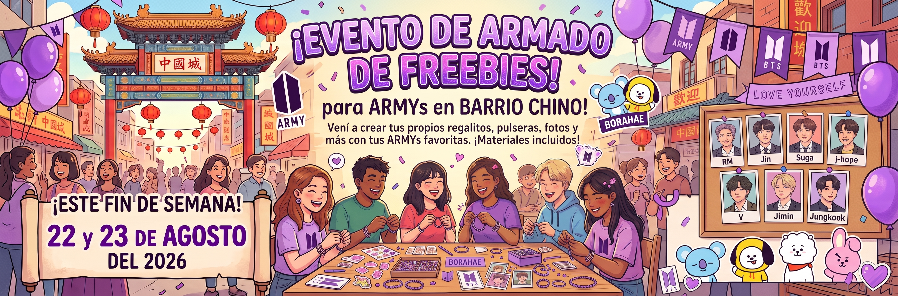

NORMAL Official MV Ya Disponible en YouTube
¡Ya está disponible el esperado MV de "NORMAL" en el canal oficial de HYBE LABELS! Conectate a la transmisión oficial y apoyá con el streaming masivo desde Argentina.

Explorá la agenda completa de actividades de ARGmy en Argentina, enterate de las últimas novedades globales del grupo y sumate a las iniciativas del fandom.

¡Ya está disponible el esperado MV de "NORMAL" en el canal oficial de HYBE LABELS! Conectate a la transmisión oficial y apoyá con el streaming masivo desde Argentina.
BTS anuncia su nuevo tour mundial "ARIRANG" con fechas confirmadas en América Latina, incluyendo Argentina el 21, 23 y 24 de Octubre.
Fechas: Abril 2026 - Marzo 2027
Más informaciónLos días 21, 23 y 24 de Octubre de 2026, el país se teñirá de morado para recibir a BTS. Para hacer de cada noche un momento inolvidable, compartimos los banners oficiales del Fan Action elegidos por y para la comunidad. Descargalos, preparate y sé parte del abrazo colectivo de ARGmy.Los días 21, 23 y 24 de Octubre de 2026, el país se teñirá de morado para recibir a BTS. Para hacer de cada noche un momento inolvidable, compartimos los banners oficiales del Fan Action elegidos por y para la comunidad. Descargalos, preparate y sé parte del abrazo colectivo de ARGmy.



¡Nos reunimos para ultimar detalles para los shows próximos de BTS en nuestro país! Vení a disfrutar haciendo freebies junto a otras ARGmys.
Fecha: 22 y 23 de Agosto del 2026
Lugar: Barrio Chino, Buenos Aires

Unite a la transmisión oficial del MV de "NORMAL" y apoyá a BTS con un streaming masivo desde Argentina.
Fecha: 27 de Agosto del 2026
Ver MV en YouTube